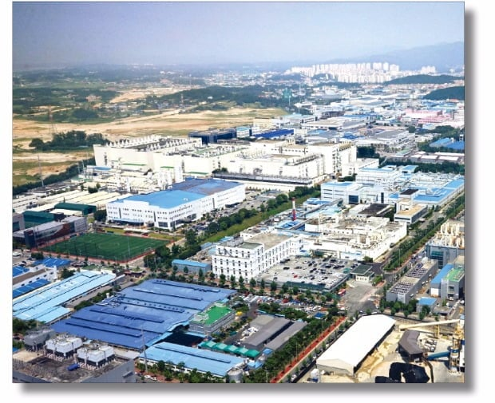
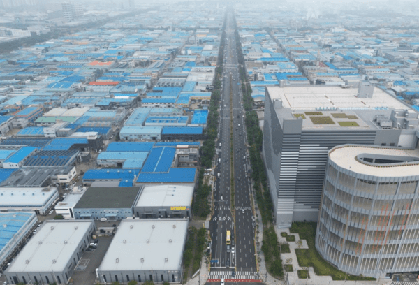
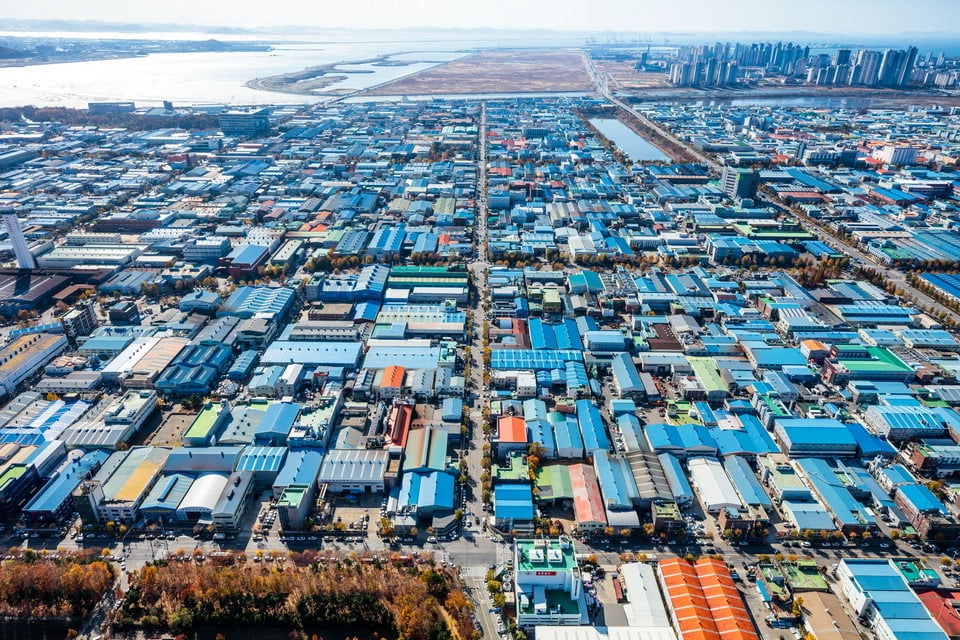
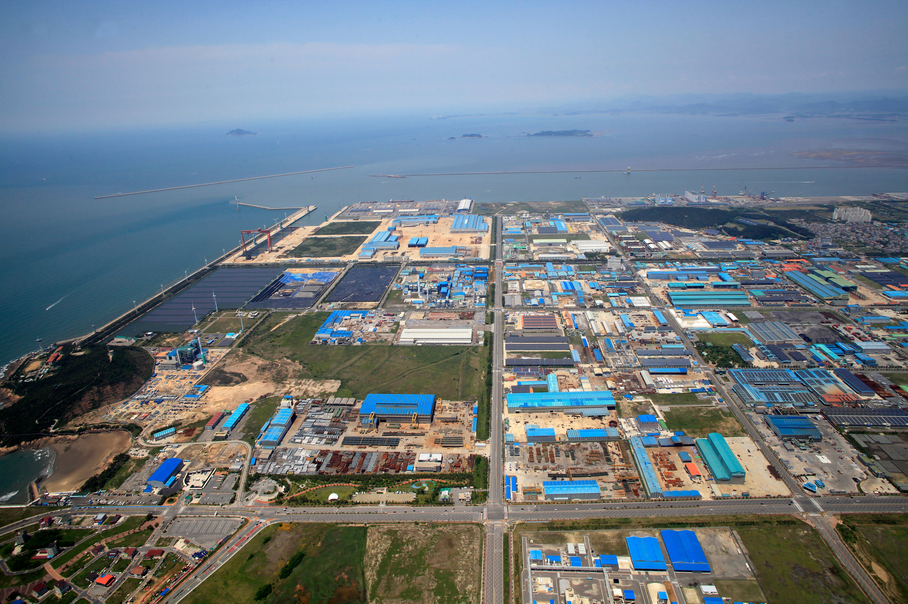
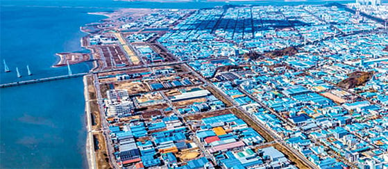
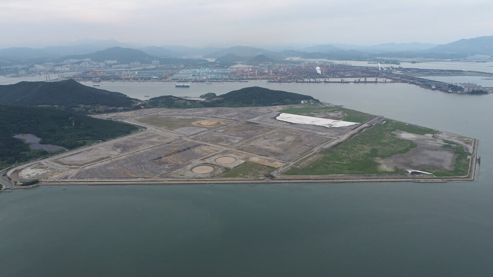
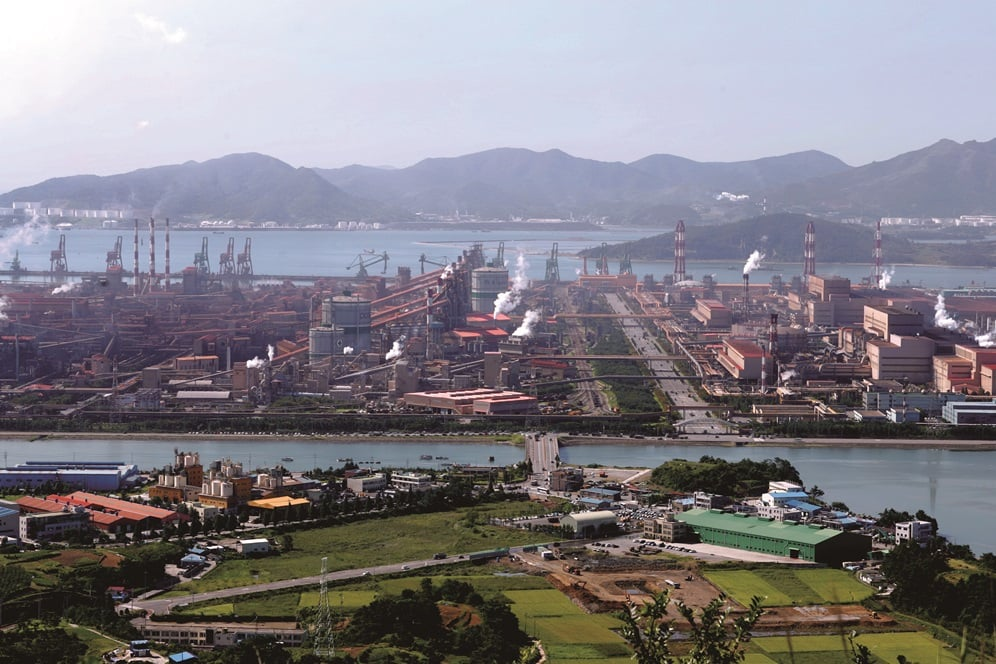
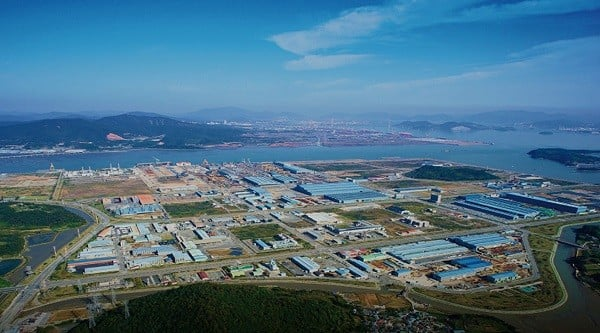

그냥 지방자체가 이런 산단 수용소가 차고남쳐서 쑤셔박을데가 남아돌음
애초에 집앞에 지을곳보다 이런곳에 짓는게 더 유리함.








그냥 지방자체가 이런 산단 수용소가 차고남쳐서 쑤셔박을데가 남아돌음
애초에 집앞에 지을곳보다 이런곳에 짓는게 더 유리함.

지방산단에 짓고 따로 데이터센터용 지방세 신설해서 걷고 그걸로 일자리창출용으로 쓰면 괜찮을거같은데
데이터센터 옹호하는 애들은 일단 a.i관련주 무조건 샀다 ㅋㅋ 난 샀지만 옹호안함
여수 산당 화학 접고 데이터 센터나 왕창 자어라
그냥 데이터센터건설 10년 계획으로 건설 지속하면 지방은 나쁘지 않을거 같은데…
서생에 데이터산단지으면 딱인데
안그래도 전북에서 새만금에 데이터센터 유치하려고 한다더만
거기 놓으면 송전망은 어찌할지 모르겠다마는
지하에 짓고 그 위에 지열발전소를 짓자 !!
차라리 원전을 짓고 폐열로 광어양식을 해서 광어값도 내리고 전기수요도 충족시키자!
원전 옆에 데센 지으면 딱이네!
둘다 같이 지으면 물 잘 끓겠다 당장 진행시켜!
우리지역도 논밭 밀고 산단구역 만들었는데 아직 빈자리 많아서 데이터센터라도 들어온다면 싫어할 곳 없을것 같음
자리보다 전기가 문제 아님?
걍 방구석 찐따임
근데 데이터센터 관련 산업은 좀 알지